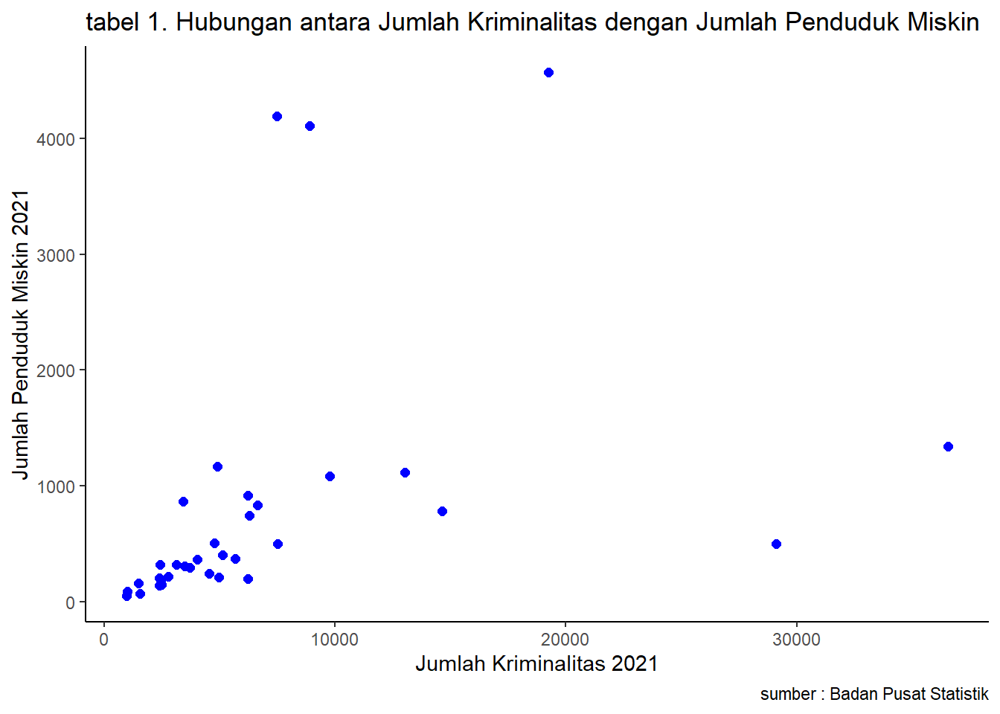

Pengaruh Jumlah Penduduk Miskin dengan Jumlah Kriminalitas di Indonesia Tahun 2021
Metode Penelitian Politeknik APP Jakarta
Author
Riyani Kusuma Yekti
Published
January 20, 2024
1 Pendahuluan
1.1 Latar belakang
Menurut Badan Pusat Statistik, kemiskinan dipandang sebagai ketidakmampuan dari sisi ekonomi untuk memenuhi kebutuhan dasar makanan dan bukan makanan yang diukur dari sisi pengeluaran. Kemiskinan akan selalu dialami seluruh negara di dunia baik negara berkembang maupun negara maju. Namun, yang menjadi pembeda diantara keduanya yaitu tingkat kemiskinan yang dimiliki. Kemiskinan dapat diartikan ketika seseorang tidak mampu memenuhi kebutuhan hidup sehari-hari karena berbagai penyebab, salah satunya dikarenakan rendahnya tingkat pendapatan.
Indonesia masih tergolong sebagai negara berkembang dan masalah kemiskinan masih menjadi pusat perhatian hingga saat ini. Kondisi kemiskinan suatu negara merupakan cerminan dari tingkat kesejahteraan penduduk dari negara tersebut. Berbagai strategi pembangunan ekonomi telah dilakukan pemerintah dalam usaha meningkatkan pertumbuhan ekonomi dan pemerataan ekonomi. Namun, dalam realitanya masih terdapat perbedaan antara harapan dan pelaksanaannya di lapangan. Semakin meningkatnya tingkat pengangguran maka akan semakin tidak produktif penduduknya. Dalam artian, banyak penduduk yang tidak mampu memenuhi kebutuhan hidupnya. Dengan adanya ketidakmampuan dalam memenuhi kebutuhan, mengakibatkan meningkatnya tingkat kriminalitas di suatu negara.
Faktor kemiskinan diyakini merupakan penyebab utama munculnya kriminalitas. Dengan minimnya tingkat pendidikan yang menyebabkan upah mereka dibayar dengan murah, ditambah dengan adanya lonjakan harga barang-barang pokok, menyebabkan masyarakat yang memiliki pendapatan rendah semakin tidak mampu memenuhi kebutuhan sehari-hari. Oleh karena itu, banyak orang yang mengambil jalan pintas illegal demi memenuhi kebutuhannya dengan melakukan kejahatan seperti pencurian, perampokan bahkan pembunuhan. Berdasarkan uraian ini, terlihat bahwa kemiskinan dan kriminalitas memiliki hubungan sehingga perlu dilakukan kajian penelitian.
1.2 Ruang lingkup
Ruang lingkup pembahasan masalah pada penelitian ini mengandung variable mengenai Jumlah Penduduk Miskin terhadap Jumlah Kriminalitas di Indonesia pada Tahun 2021. Peran dari batasan masalah ini, yaitu membantu mengindentifikasi masalah yang akan diuraikan dan membatasi jangkauan proses yang diuraikan.
1.3 Rumusan masalah
Berdasarkan uraian diatas, maka rumusan masalah dalam penelitian ini adalah :
Apakah kemiskinan berpengaruh terhadap jumlah kriminalitas di Indonesia?
1.4 Tujuan dan manfaat penelitian
Tujuan dari penelitian ini adalah untuk mengetahui pengaruh jumlah penduduk miskin terhadap jumlah kriminalitas di Indonesia pada tahun 2021.
Manfaat penelitian ini adalah untuk menambah pengetahuan serta memperluas wawasan bagi peneliti dan masyarakat.
1.5 Package
Packages yang digunakan antara lain sebagai berikut:
library("tidyverse")
── Attaching core tidyverse packages ──────────────────────── tidyverse 2.0.0 ──
✔ dplyr 1.1.3 ✔ readr 2.1.4
✔ forcats 1.0.0 ✔ stringr 1.5.0
✔ ggplot2 3.4.3 ✔ tibble 3.2.1
✔ lubridate 1.9.2 ✔ tidyr 1.3.0
✔ purrr 1.0.2
── Conflicts ────────────────────────────────────────── tidyverse_conflicts() ──
✖ dplyr::filter() masks stats::filter()
✖ dplyr::lag() masks stats::lag()
ℹ Use the conflicted package (<http://conflicted.r-lib.org/>) to force all conflicts to become errors
library("readxl")library("dplyr")
2 Studi pustaka
Menurut Ratih Primandari (2019) kemiskinan merupakan suatu keadaan yang sering kali dikaitkan ketidakmampuan di sisi ekonomi dalam rangka pertumbuhan kebutuhan hidup sehari-hari. Kemiskinan secara absolut diukur berdasarkaan ketidakmampuan untuk mencukupi kebutuhan pokok minimum seperti pangan, sandang, kesehatan, perumahan dan pendidikan yang diperlukan untuk bisa hidup dan bekerja. Kebutuhan pokok minimum diterjemahkan sebagai ukuran finansial dalam bentuk uang. Nilai kebutuhan minimum kebutuhan dasar tersebut dikenal dengan istilah garis kemiskinan. Penduduk yang pendapatannya di bawah garis kemiskinan digolongkan sebagai penduduk miskin.
Menurut Kartono (2009) kriminalitas didefinisikan sebagai semua aktivitas yang mendapat pertentangan dari masyarakat karena melanggar hukum, sosial dan agama serta merugikan baik secara ekonomis maupun psikologis.
3 Metode penelitian
3.1 Data
Jumlah Kriminalitas (JK) Tahun 2021
Jumlah Penduduk Miskin (JPM) Tahun 2021
Provinsi
JK
Aceh
6.651
Sumatera Utara
36.534
Sumatera Barat
5.666
Riau
7.512
Jambi
3.701
Sumatera Selatan
13.037
Bengkulu
3.493
Lampung
9.764
Kepulauan Bangka Belitung
1.566
Kepulauan Riau
2.481
DKI Jakarta
29.103
Jawa Barat
7.502
Jawa Tengah
8.909
DI Yogyakarta
4.774
Jawa Timur
19.257
Banten
3.434
Bali
2.404
Nusa Tenggara Barat
6.296
Nusa Tenggara Timur
4.909
Kalimantan Barat
4.048
Kalimantan Tengah
2.399
Kalimantan Selatan
4.973
Kalimantan Timur
4.564
Kalimantan Utara
971
Sulawesi Utara
6.251
Sulawesi Tengah
5.139
Sulawesi Selatan
14.363
Sulawesi Tenggara
2.431
Gorontalo
2.445
Sulawesi Barat
1.500
Maluku
3.139
Maluku Utara
1.008
Papua Barat
2.784
Papua
6.236
Provinsi
JPM
Aceh
834.24
Sumatera Utara
1343.86
Sumatera Barat
370.67
Riau
500.81
Jambi
293.86
Sumatera Selatan
1113.76
Bengkulu
306
Lampung
1083.93
Kepulauan Bangka Belitung
72.71
Kepulauan Riau
144.46
DKI Jakarta
501.92
Jawa Barat
4195.34
Jawa Tengah
4109.75
DI Yogyakarta
506.45
Jawa Timur
4572.73
Banten
867.23
Bali
201.97
Nusa Tenggara Barat
746.66
Nusa Tenggara Timur
1169.31
Kalimantan Barat
367.89
Kalimantan Tengah
140.04
Kalimantan Selatan
208.11
Kalimantan Timur
241.77
Kalimantan Utara
52.86
Sulawesi Utara
196.35
Sulawesi Tengah
404.44
Sulawesi Selatan
784.98
Sulawesi Tenggara
318.7
Gorontalo
186.29
Sulawesi Barat
157.19
Maluku
321.81
Maluku Utara
87.16
Papua Barat
219.07
Papua
920.44
Penelitian ini menggunakan data Jumlah Kriminalitas dan Jumlah Penduduk Miskin di Indonesia Tahun 2021 dari Badan Pusat Statistik.
# A tibble: 6 × 3
Provinsi JK JPM
<chr> <dbl> <dbl>
1 Aceh 6651 834.
2 Sumatera Utara 36534 1344.
3 Sumatera Barat 5666 371.
4 Riau 7512 501.
5 Jambi 3701 294.
6 Sumatera Selatan 13037 1114.
library("ggplot2")library("readxl")ggplot(data=dat,aes(x=JK,y=JPM))+geom_point(color="blue",size=2)+labs(title="tabel 1. Hubungan antara Jumlah Kriminalitas dengan Jumlah Penduduk Miskin",x="Jumlah Kriminalitas 2021",y="Jumlah Penduduk Miskin 2021",caption ="sumber : Badan Pusat Statistik")+theme_classic()

3.2 Metode analisis
Metode yang dipilih adalah regresi univariat atau Ordinary Least Square (OLS) dengan 1 variabel independen. Penelitian ini bermaksud mencari hubungan antara Jumlah Penduduk Miskin (JPM) dengan Jumlah Kriminalitas (JK).
Spesifikasi yang dilakukan adalah:
\[
y_{t}=\beta_0 + \beta_1 x_t+\mu_t
\] di mana \(y_t\) adalah Jumlah Kriminalitas (JK) dan \(x_t\) adalah Jumlah Penduduk Miskin (JPM).
4 Pembahasan
4.1 Pembahasan masalah
Dalam penelitian ini, peneliti menggunakan OLS, sehingga fokus yang akan dibahas adalah mengaitkan Jumlah Kriminalitas dengan Jumlah Penduduk Miskin. Data tersebut disatukan dan menampilkan regresi seperti dibawah ini.
4.2 Analisis masalah
Hasil regresinya adalah
reg1<-lm(JK~JPM,data=dat)summary(reg1)
Call:
lm(formula = JK ~ JPM, data = dat)
Residuals:
Min 1Q Median 3Q Max
-7916.5 -3115.2 -1983.5 -330.9 28169.9
Coefficients:
Estimate Std. Error t value Pr(>|t|)
(Intercept) 5039.463 1528.644 3.297 0.0024 **
JPM 2.474 1.094 2.261 0.0307 *
---
Signif. codes: 0 '***' 0.001 '**' 0.01 '*' 0.05 '.' 0.1 ' ' 1
Residual standard error: 7263 on 32 degrees of freedom
Multiple R-squared: 0.1378, Adjusted R-squared: 0.1108
F-statistic: 5.114 on 1 and 32 DF, p-value: 0.03067
Hasil regresi di atas menunjukkan Pr(>|t|) = 0.0307, dimana semakin kecil angkanya maka semakin baik sedangkan semakin mendekati 1 angkanya, maka semakin tidak signifikan. Dikarenakan 0.0307 mendekati 1, artinya antara Jumlah Penduduk Miskin dengan Jumlah Kriminalitas hasilnya tidak signifikan.
5 Kesimpulan
Berdasarkan hasil regresi di atas, dapat disimpulkan bahwa setiap adanya peningkatan sebesar 100 ribu jiwa Jumlah Penduduk Miskin di Indonesia, maka Jumlah Kriminalitas di Indonesia meningkat sebesar 2,474 persen. Hal tersebut dapat disebabkan oleh keinginan orang-orang untuk memenuhi kebutuhan hidupnya namun, tidak memiliki penghasilan yang cukup atau tidak memiliki penghasilan sama sekali. Oleh karena itu, banyak orang membenarkan segala cara untuk memenuhi kebutuhannya dengan cara ilegal seperti pencurian, perampokan bahkan pembunuhan.
6 Saran
Untuk hasil penelitian yang lebih baik, disarankan untuk menambahkan variabel yang relevan dengan variabel utama yang diteliti dan menggunakan periode tahun yang lebih lama sehingga meningkatkan akurasi penelitian.
7 Referensi
Badan Pusat Statistik Indonesia. Jumlah dan Persentase Penduduk Miskin Menurut Provinsi, 2021. Diakses pada 20 Januari 2024, dari https://www.bps.go.id/id/statistics-table/3/UkVkWGJVZFNWakl6VWxKVFQwWjVWeTlSZDNabVFUMDkjMw==/jumlah-dan-persentase-penduduk-miskin-menurut-provinsi.html?year=2021
Badan Pusat Statistik Indonesia. (10 Februari 2023). Jumlah Kejahatan yang Dilaporkan, Risiko Penduduk Terkena Kejahatan per 100.000 Penduduk, Persentase Penyelesaian Kejahatan, dan Selang Waktu Terjadinya Kejahatan Menurut Kepolisian Daerah , 2021. Diakses pada 20 Januari 2024, dari https://www.bps.go.id/id/statistics-table/3/VlVneFlXOVJOSFpNUzNKcU4zVlFla2syVEZjd1VUMDkjMw==/jumlah-kejahatan-yang-dilaporkan-risiko-penduduk-terkena-kejahatan-per-100-000-penduduk-persentase-penyelesaian-kejahatan-dan-selang-waktu-terjadinya-kejahatan-menurut-provinsi.html?year=2021
Ratih Primandari, N. (2019). Pengaruh pertumbuhan ekonomi, inflasi dan pengangguran terhadap tingkat kemiskinan di Sumatera Selatan. Jurnal Ekonomi Pembangunan, 16(1), 1–10. https://doi.org/10.29259/jep.v16i1.8856
Ariyanto, S. T. W., Tjalla, A., & Mahdiyah, M. (2023). Analisis Pengaruh Meningkatnya Jumlah Kemiskinan di Jakarta Dalam 20 Tahun Terakhir Terhadap Jumlah Kriminalitas di Wilayah Hukum Polda Metro Jaya. Jurnal Litbang Polri, 26(2), 50–55. https://doi.org/10.46976/litbangpolri.v26i2.200